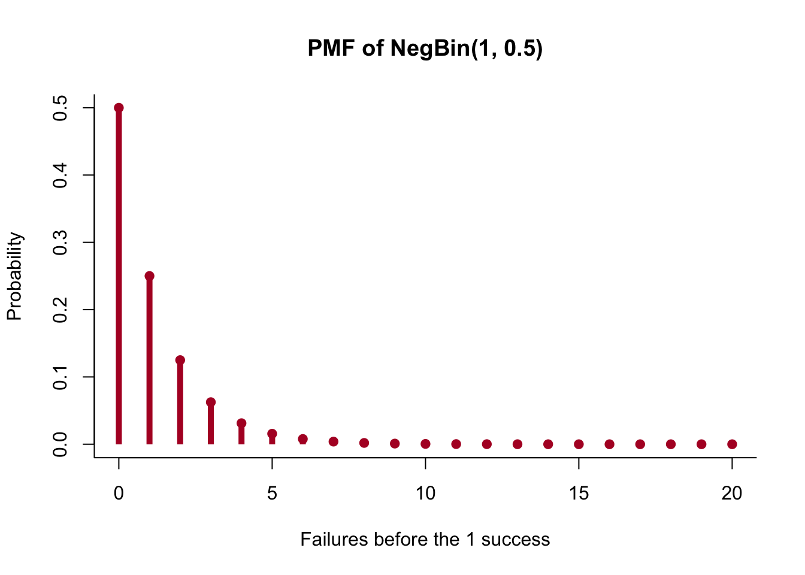
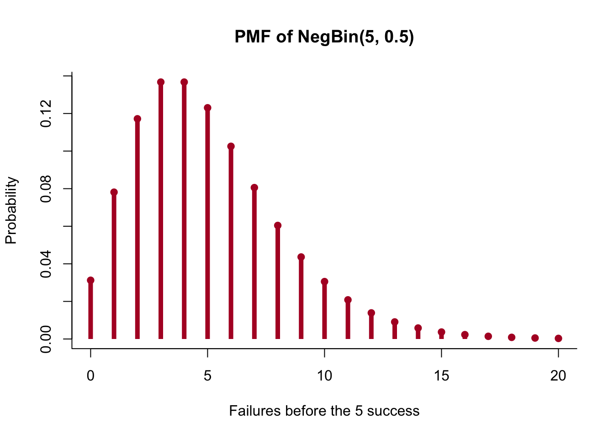
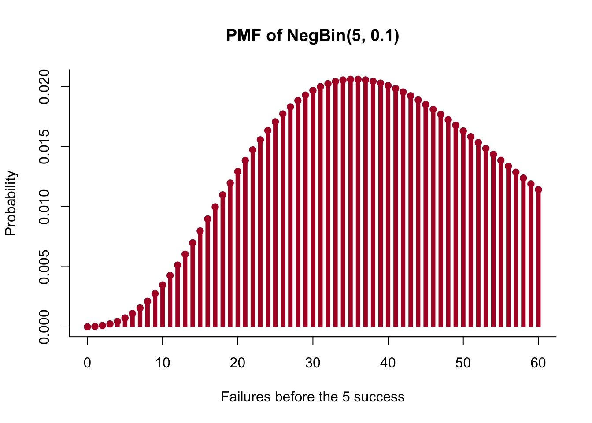
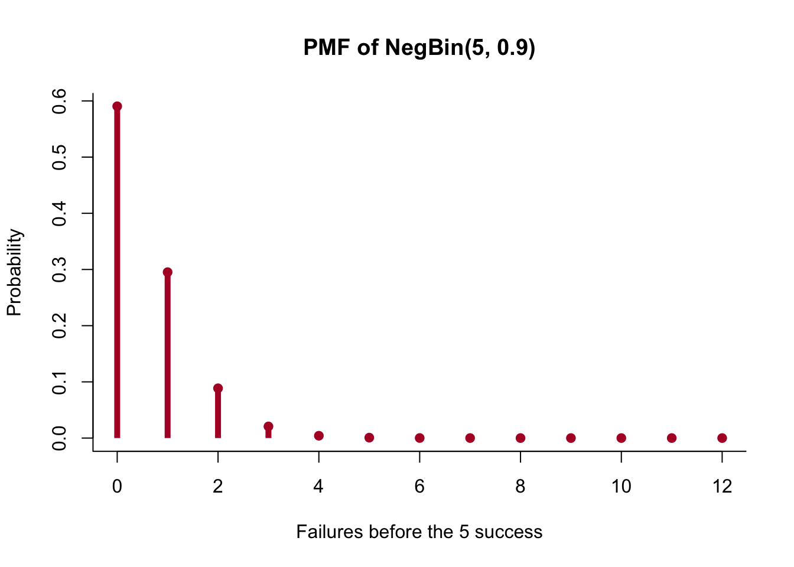
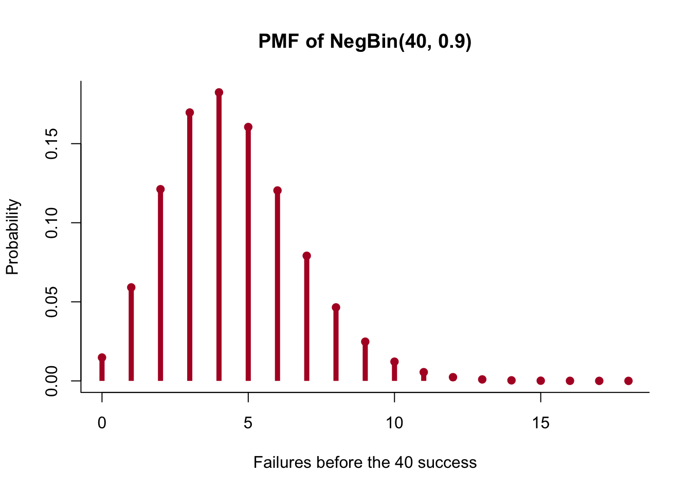
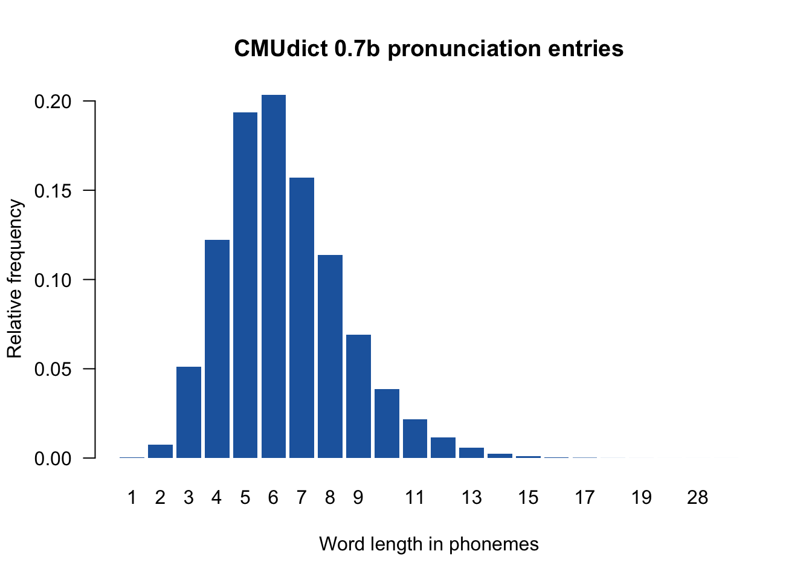
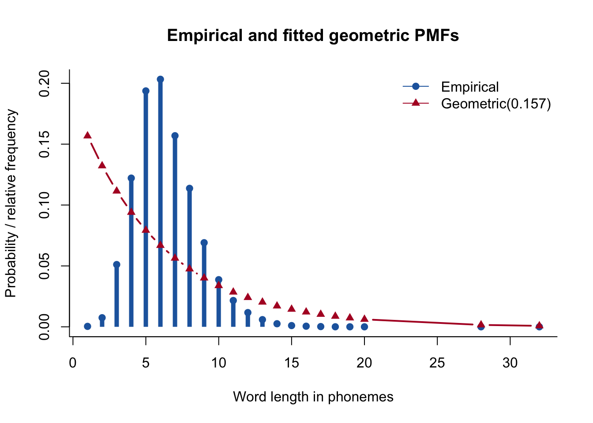
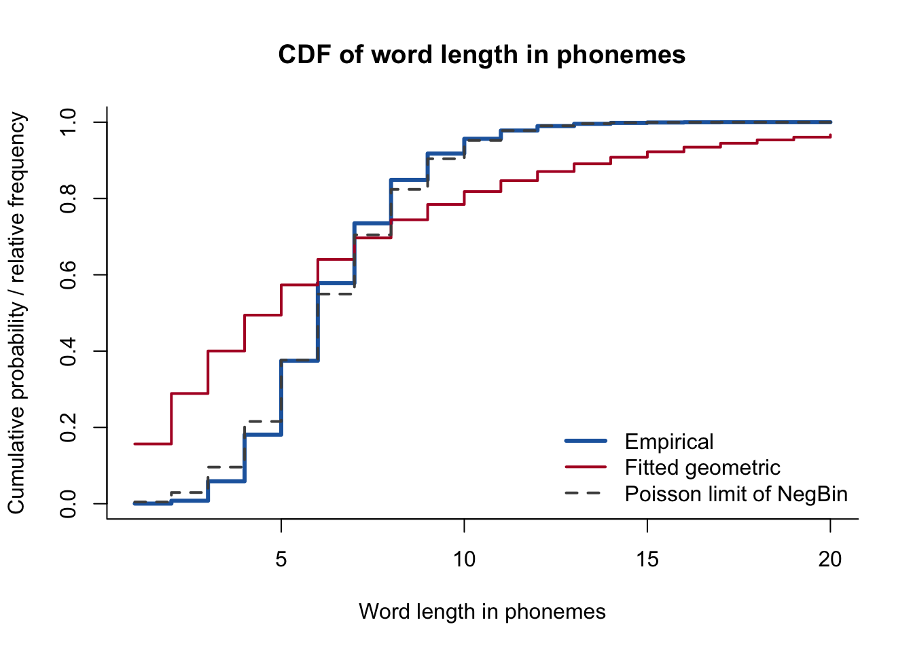

Code
dnbinom(4, size = 3, prob = .20)The geometric distribution counted failures before the first target occurs. What if the sampling rule stops at the third loanword rather than the first? Suppose we continue sampling corpus tokens until we encounter that third target, and let K record the number of nonloanwords observed beforehand.
The negative binomial distribution represents this waiting count when each draw is independent and has the same target probability \pi. The name is less informative than the mechanism: we wait for a fixed number of targets and count the failures encountered along the way.
Let r\in\{1,2,\ldots\} be the target number of loanwords. We write
K\sim\operatorname{NegBin}(r,\pi).
Under the failures convention,
\operatorname{supp}(K)=\{0,1,2,3,\ldots\}.
The value zero is possible because the first r draws might all be targets.
Take r=3 and K=2. Every qualifying sequence contains three target outcomes, written S, and two nonloanwords, written N. The final draw must be the third target. The earlier four positions contain two targets and two nonloanwords.
The possible sequences are
NNSSS, \quad NSNSS, \quad NSSNS, \quad SNNSS, \quad SNSNS, \quad SSNNS.
There are six sequences. This count equals
{2+3-1\choose2}={4\choose2}=6.
The final target is reserved, and the failures can occupy any two of the first four positions.
For general r and k, every qualifying sequence has r targets and k nonloanwords. Its probability is
\pi^r(1-\pi)^k.
The number of sequences is
{k+r-1\choose k}.
Now combine the two pieces. The binomial coefficient counts the mutually exclusive qualifying sequences, while \pi^r(1-\pi)^k gives the probability of each sequence. Multiplying arrangement count by sequence probability gives
p_K(k) \equiv\mathbb{P}(K=k) ={k+r-1\choose k}(1-\pi)^k\pi^r, \qquad k\in\{0,1,2,\ldots\}.
Let r=3, \pi=.20, and k=4. Then
\begin{aligned} p_K(4) &={6\choose4}(.80)^4(.20)^3\\ &=15(.4096)(.008)\\ &=.049152. \end{aligned}
This is the probability of observing exactly four nonloanwords before the third loanword.
Base R uses the same failures convention:
dnbinom(4, size = 3, prob = .20)The argument size specifies the target number of successes, and the first argument specifies failures before that target.
For this parameterization,
\mathbb{E}[K] =r\frac{1-\pi}{\pi}
and
\operatorname{Var}(K) =r\frac{1-\pi}{\pi^2}.
With r=3 and \pi=.20,
\mathbb{E}[K] =3\frac{.80}{.20} =12
and
\operatorname{Var}(K) =3\frac{.80}{.20^2} =60.
The family allows a long right tail because many failures may occur before the required target count is reached.
Set r=1. The arrangement count becomes one:
{k\choose k}=1.
The PMF reduces to
p_K(k)=(1-\pi)^k\pi,
which is the geometric waiting process under the failures before first target convention.
Negative binomial distributions can count failures, total draws, or target events. These parameterizations cannot be mixed. If K counts failures before target r, then the total number of draws is
T\equiv K+r.
Some texts or software model T instead. Others use a mean and dispersion parameter for the same family. A numerical parameter is interpretable only after the counted quantity and convention have been declared.
First hold \pi=.5 fixed and compare r=1 with r=5. Then hold r=5 fixed and compare \pi=.1 with \pi=.9, before increasing r to 40 at \pi=.9.
plot_negative_binomial <- function(size, probability, upper) {
k <- 0:upper
mass <- dnbinom(k, size = size, prob = probability)
plot(k, mass, type = "h", lwd = 5, lend = 1, col = "#B2182B",
xlab = sprintf("Failures before the %s success", size),
ylab = "Probability",
main = sprintf("PMF of NegBin(%s, %.1f)", size, probability),
bty = "l")
points(k, mass, pch = 19, col = "#B2182B")
}
plot_negative_binomial(1, .5, 20)
plot_negative_binomial(5, .5, 20)
plot_negative_binomial(5, .1, 60)
plot_negative_binomial(5, .9, 12)
plot_negative_binomial(40, .9, 18)
These plots have a direct parameter interpretation. Holding \pi fixed, increasing r increases
\mathbb E[K]=r\frac{1-\pi}{\pi}.
Holding r fixed, decreasing \pi also increases this mean. Unlike a geometric PMF, a negative-binomial PMF can have an interior mode when r>1.
Use CMU Pronouncing Dictionary 0.7b. Each noncomment line contains an orthographic entry followed by its ARPAbet phone symbols, and alternate pronunciations occupy separate entries under the documented file format. Thus the observational unit below is a pronunciation entry, not a unique word type or a corpus token. Define
L(\omega) \equiv \text{number of phone symbols in pronunciation entry }\omega.
The following code reads the data file directly and computes L from each entry.
cmudict_candidates <- c(
"../decks/random-variables-and-distributions/data/cmudict-0.7b",
"decks/random-variables-and-distributions/data/cmudict-0.7b"
)
cmudict_path <- cmudict_candidates[file.exists(cmudict_candidates)][1]
cmudict_lines <- readLines(cmudict_path, encoding = "latin1", warn = FALSE)
cmudict_entries <- cmudict_lines[
nzchar(cmudict_lines) & !startsWith(cmudict_lines, ";;;")
]
cmudict_fields <- strsplit(trimws(cmudict_entries), "[[:space:]]+")
word_lengths <- lengths(cmudict_fields) - 1L
length(word_lengths)[1] 133854range(word_lengths)[1] 1 32The empirical PMF has an interior mode.
empirical_mass <- prop.table(table(word_lengths))
length_values <- as.integer(names(empirical_mass))
barplot(empirical_mass, names.arg = length_values,
col = "#2166AC", border = NA, space = .15,
xlab = "Word length in phonemes", ylab = "Relative frequency",
main = "CMUdict 0.7b pronunciation entries", las = 1)
The observed mode is six phonemes. A geometric model for K\equiv L-1 cannot reproduce this feature because
\frac{p_K(k+1)}{p_K(k)}=1-\pi<1.
Its fitted PMF must decrease from L=1.
word_failures <- word_lengths - 1L
geom_pi_hat <- 1 / mean(word_lengths)
plot(length_values, as.numeric(empirical_mass), type = "h",
lwd = 5, lend = 1, col = "#2166AC",
xlab = "Word length in phonemes",
ylab = "Probability / relative frequency",
main = "Empirical and fitted geometric PMFs", bty = "l")
points(length_values, as.numeric(empirical_mass), pch = 19, col = "#2166AC")
lines(length_values, dgeom(length_values - 1, prob = geom_pi_hat),
type = "b", pch = 17, lwd = 2, col = "#B2182B")
legend("topright", c("Empirical", sprintf("Geometric(%.3f)", geom_pi_hat)),
col = c("#2166AC", "#B2182B"), lty = 1,
pch = c(19, 17), bty = "n")
For K\sim\operatorname{NegBin}(r,\pi),
\mathbb E[K]=r\frac{1-\pi}{\pi} \qquad\text{and}\qquad \operatorname{Var}(K)=r\frac{1-\pi}{\pi^2}.
Writing \mu\equiv\mathbb E[K] gives
\operatorname{Var}(K)=\mu+\frac{\mu^2}{r}>\mu
for every finite r. The empirical mean and variance are computed directly below.
poisson_lambda_hat <- mean(word_failures)
c(mean = mean(word_failures), variance = var(word_failures)) mean variance
5.380586 4.566164 Because the empirical variance is smaller than the empirical mean, the negative-binomial likelihood increases toward the Poisson boundary r\to\infty. Freeing r removes the geometric family’s boundary-mode restriction, but no finite negative-binomial distribution can reproduce the observed underdispersion.
cdf_x <- 1:20
plot(cdf_x, ecdf(word_lengths)(cdf_x), type = "s", lwd = 3,
col = "#2166AC", xlab = "Word length in phonemes",
ylab = "Cumulative probability / relative frequency",
main = "CDF of word length in phonemes", ylim = c(0, 1), bty = "l")
lines(cdf_x, pgeom(cdf_x - 1, prob = geom_pi_hat),
type = "s", lwd = 2, col = "#B2182B")
lines(cdf_x, ppois(cdf_x - 1, lambda = poisson_lambda_hat),
type = "s", lwd = 2, lty = 2, col = "#4D4D4D")
legend("bottomright",
c("Empirical", "Fitted geometric", "Poisson limit of NegBin"),
col = c("#2166AC", "#B2182B", "#4D4D4D"),
lty = c(1, 1, 2), lwd = c(3, 2, 2), bty = "n")
Fix \lambda>0 and let
K_r\sim\operatorname{NegBin}\!\left(r,\frac{r}{r+\lambda}\right).
The mean of K_r is \lambda, and for every k=0,1,2,\ldots,
\lim_{r\to\infty}\mathbb P(K_r=k) =e^{-\lambda}\frac{\lambda^k}{k!}.
Thus K_r converges in distribution to \operatorname{Poisson}(\lambda). The success-probability parameter is r/(r+\lambda) under the failures-before-rth-success convention.
The negative binomial family models a count generated by waiting for a fixed target number. The next page models event counts in a declared unit of exposure.